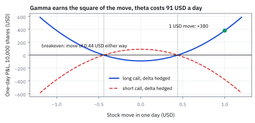

13.3 The Greeks
วัดว่าราคาสิทธิ์เปลี่ยนเท่าไรเมื่อแต่ละปัจจัยขยับ
ขาย call 100 สัญญาบนหุ้น \$35 strike 36 อายุ 3 เดือน ราคา \$1.3154 ต้องถือหุ้นกี่หุ้น ความผันผวนขึ้น 1 จุดเสียเท่าไร ได้ค่าเวลาวันละเท่าไร และหุ้นแกว่งวันละเท่าไรจึงเท่าทุน?
เฉลย: ซื้อหุ้น 4,471 หุ้น ความผันผวน +1 จุดเสีย \$692 ได้ค่าเวลาวันละ \$98.85 และเท่าทุนเมื่อหุ้นแกว่งวันละ ±\$0.44 หรือ 1.26% แกว่งน้อยกว่านี้คนขายได้ แกว่งมากกว่านี้คนขายเสีย
ศัพท์ชุดแรก: ตัวเลขความไวห้าตัวที่โต๊ะดูทุกวัน
- Greek
-
คืออะไร: ตัวเลขที่บอกว่าราคา option ขยับเท่าไรเมื่อสิ่งหนึ่งรอบตัวมันขยับนิดเดียว เรียกด้วยอักษรกรีกเพราะประเพณีของโต๊ะเทรด ไม่ได้มีความหมายลึกซึ้งกว่านั้น
ใช้ทำอะไร: ใช้ตอบคำถามว่าถ้าพรุ่งนี้หุ้นขึ้น \$1 พอร์ตเราจะได้หรือเสียเท่าไร โดยไม่ต้องคำนวณราคาใหม่ทั้งพอร์ต
ทำไมต้องมี: เพราะโต๊ะเทรดหนึ่งโต๊ะถือ option เป็นพันสัญญา การตีราคาใหม่ทุกครั้งที่ราคาขยับนั้นช้าเกินกว่าจะทันตลาด
- sensitivity
-
คืออะไร: คำกลาง ๆ ของคำว่า Greek หมายถึงอัตราการเปลี่ยนของสิ่งหนึ่งต่ออีกสิ่งหนึ่ง ในทางคณิตศาสตร์คือ derivative ที่จุดหนึ่ง
ใช้ทำอะไร: ใช้เป็นภาษากลางเวลาพูดถึงความไวต่อปัจจัยที่ไม่มีชื่อกรีก เช่นความไวต่อ dividend yield
ทำไมต้องใช้: เพราะอักษรกรีกมีจำกัด แต่ปัจจัยเสี่ยงในตลาดจริงมีมากกว่านั้น
- delta
-
คืออะไร: ราคา option เปลี่ยนไปกี่ USD เมื่อหุ้นขยับขึ้น \$1 ถ้า delta เท่ากับ 0.6 แปลว่าหุ้นขึ้น \$1 แล้ว option ขึ้น \$0.60
ใช้ทำอะไร: ใช้แปลง option หนึ่งสัญญาให้เทียบเท่าหุ้นกี่หุ้น จะได้รวมความเสี่ยงของ option กับหุ้นในหน่วยเดียวกันได้
ทำไมต้องใช้: เพราะมันคือความเสี่ยงก้อนใหญ่ที่สุดของ option ถ้าไม่จัดการตัวนี้ก่อน ตัวอื่นแทบไม่มีความหมาย
- delta hedge
-
คืออะไร: การถือหุ้นในทิศตรงข้ามกับ delta ของ option ที่เราถือ ถ้าเราถือ option ที่มี delta รวม 600 เราก็ขายหุ้น 600 หุ้น
ใช้ทำอะไร: ใช้ลบผลของทิศทางราคาออกจากพอร์ต เหลือไว้แต่ความเสี่ยงเรื่องความผันผวนซึ่งเป็นสิ่งที่เราตั้งใจซื้อขายจริง
ทำไมต้องใช้: เพราะคนขาย option ไม่ได้ต้องการเดาว่าหุ้นจะขึ้นหรือลง เขาต้องการเก็บส่วนต่างของความผันผวน การเดาทิศทางจึงเป็นความเสี่ยงที่ไม่ได้ตั้งใจรับ
- gamma
-
คืออะไร: delta เปลี่ยนไปเท่าไรเมื่อหุ้นขยับขึ้น \$1 พูดอีกแบบคือความไวของความไว
ใช้ทำอะไร: ใช้บอกว่า hedge ที่ตั้งไว้เมื่อเช้าจะเพี้ยนเร็วแค่ไหนเมื่อราคาวิ่ง gamma สูงแปลว่าต้องกลับมาปรับ hedge บ่อย
ทำไมต้องใช้: เพราะ delta ใช้ได้เฉพาะรอบ ๆ ราคาปัจจุบัน พอราคาวิ่งไกล ตัวเลขที่จดไว้เมื่อเช้าก็ผิดไปแล้ว gamma คือตัวที่บอกว่าผิดเร็วแค่ไหน
- convexity
-
คืออะไร: ความโค้งของเส้นมูลค่าเทียบกับราคาหุ้น ถ้าเส้นโค้งขึ้นแปลว่าได้กำไรตอนขึ้น มากกว่าที่ขาดทุนตอนลงเท่ากัน
ใช้ทำอะไร: ใช้อธิบายว่าทำไมคนถือ option ถึงชอบให้ตลาดแกว่งแรง ๆ ไม่ว่าจะแกว่งขึ้นหรือลง
ทำไมต้องใช้: เพราะมันคือสิ่งที่คนซื้อ option จ่ายเงินซื้อจริง ๆ และ gamma คือตัวเลขที่วัดมันออกมาเป็นหน่วยที่ใช้งานได้
- vega
-
คืออะไร: ราคา option เปลี่ยนไปเท่าไรเมื่อความผันผวนที่ตลาดคาดไว้ขยับขึ้นหนึ่งหน่วยเต็ม คือจาก 0 เป็น 1 หรือจาก 0% เป็น 100%
ใช้ทำอะไร: ใช้วัดว่าพอร์ตเราได้หรือเสียเท่าไรเมื่อตลาดเปลี่ยนใจเรื่องความเสี่ยงข้างหน้า
ทำไมต้องใช้: เพราะหลังจาก hedge delta แล้ว นี่คือความเสี่ยงหลักที่เหลืออยู่ และเป็นตัวที่โต๊ะ volatility ตั้งใจรับ
- volatility point
-
คืออะไร: การขยับความผันผวน1 จุดเปอร์เซ็นต์ เช่นจาก 20% เป็น 21% ซึ่งเท่ากับ 0.01 ในหน่วยทศนิยม
ใช้ทำอะไร: ใช้รายงาน vega ในหน่วยที่คนอ่านรู้เรื่อง โดยเอา vega ดิบคูณ 0.01
ทำไมต้องใช้: เพราะความผันผวนไม่เคยขยับทีละหน่วยเต็ม ตัวเลขดิบจึงใหญ่เกินจริงจนไม่มีใครใช้
- theta
-
คืออะไร: มูลค่า option หายไปเท่าไรเมื่อเวลาผ่านไป โดยที่ทุกอย่างอื่นไม่ขยับเลย
ใช้ทำอะไร: ใช้ตอบว่าถ้าตลาดนิ่งสนิททั้งวัน คนขาย option จะเก็บได้เท่าไร และคนซื้อจะเสียเท่าไร
ทำไมต้องใช้: เพราะ option มีวันหมดอายุ เวลาที่เหลือคือสินค้าที่กำลังละลาย theta คือราคาของการละลายนั้นต่อวัน
- calendar-day convention
-
คืออะไร: ข้อตกลงว่าจะหารค่าต่อปีด้วย 365 เพื่อให้ได้ค่าต่อวัน โดยนับวันหยุดเป็นวันด้วย
ใช้ทำอะไร: ใช้ให้ตัวเลข theta ที่รายงานกันในโต๊ะหมายถึงสิ่งเดียวกัน
ทำไมต้องใช้: เพราะอีกฝ่ายอาจหารด้วย 252 วันทำการ ตัวเลขจะต่างกันเกือบสามสิบเปอร์เซ็นต์ทั้งที่พูดถึงสัญญาเดียวกัน
- rho
-
คืออะไร: ราคา option เปลี่ยนไปเท่าไรเมื่ออัตราดอกเบี้ยขยับ
ใช้ทำอะไร: ใช้กับสัญญาอายุยาว ซึ่งต้นทุนการถือเงินมีน้ำหนักจริง
ทำไมต้องใช้: เพราะกับสัญญาอายุสั้นตัวนี้เล็กจนมองข้ามได้ แต่พออายุเป็นปี มันกลายเป็นก้อนที่ใหญ่กว่า theta ของบางวัน
- basis point
-
คืออะไร: หนึ่งในหมื่นส่วน หรือ 0.0001 อ่านย่อว่า bp
ใช้ทำอะไร: ใช้เป็นหน่วยมาตรฐานเวลาพูดถึงการขยับของอัตราดอกเบี้ย
ทำไมต้องใช้: เพราะอัตราดอกเบี้ยขยับทีละเศษเสี้ยว การพูดว่า 'ขึ้น 25 bp' ชัดกว่าการพูดว่า 'ขึ้น 0.0025'
สัญลักษณ์ที่ใช้ในหัวข้อนี้
| สัญลักษณ์ | ความหมาย | หน่วย |
|---|---|---|
| $S$ | ราคาหุ้นวันนี้ ซึ่ง Greek ทุกตัววัดความไวเทียบกับมัน | USD |
| $K$ | ราคาที่ตกลงไว้ในสัญญา | USD |
| $t$ | เวลาปัจจุบัน | ปี |
| $T$ | วันหมดอายุ | ปี |
| $\tau=T-t$ | เวลาที่เหลือ ซึ่งลดลงเองทุกวันและเป็นที่มาของ theta | ปี |
| $C$ | ราคา call ที่เราจะหาความไวของมันต่อทุกปัจจัย | USD |
| $r$ | อัตราดอกเบี้ยไร้ความเสี่ยง | ปี⁻¹ |
| $\sigma$ | ความผันผวนต่อปีที่ใส่ลงในสูตร | ปี⁻¹ᐟ² |
| $d_1$ | ระยะมาตรฐานที่ใช้กับขาหุ้น เป็นตัวที่ $\Phi(d_1)$ กลายเป็น delta พอดี | ไม่มีหน่วย |
| $d_2$ | ระยะมาตรฐานที่ใช้กับขา strike ต่างจากตัวบนอยู่ $\sigma\sqrt{\tau}$ พอดี | ไม่มีหน่วย |
| $\Phi,\phi$ | พื้นที่สะสมใต้เส้นระฆังมาตรฐาน และความสูงของเส้นระฆังนั้น ณ จุดเดียวกัน | ไม่มีหน่วย |
| $\Delta=C_S,\Gamma=C_{SS}$ | delta และ gamma ของ call หนึ่งหน่วย | ไม่มีหน่วย, USD⁻¹ |
| $\nu=C_\sigma$ | vega ดิบ คือราคาเปลี่ยนเท่าไรเมื่อ $\sigma$ ขยับหนึ่งหน่วยเต็ม | USD ต่อหน่วย $\sigma$ |
| $\Theta=C_t$ | theta ดิบ คือราคาเปลี่ยนเท่าไรต่อหนึ่งปีที่ผ่านไป | USD ต่อปี |
| $\rho=C_r$ | rho ดิบ คือราคาเปลี่ยนเท่าไรเมื่อดอกเบี้ยขยับหนึ่งหน่วยเต็ม | USD ต่อหน่วย $r$ |
| $\nu_{\rm point}$ | vega ที่แปลงหน่วยแล้ว คือเงินต่อการขยับ 1 จุดเปอร์เซ็นต์ | USD ต่อจุด |
| $\Theta_{\rm day}$ | theta ที่แปลงหน่วยแล้ว คือเงินต่อหนึ่งวันปฏิทิน | USD ต่อวัน |
| $\rho_{\rm bp}$ | rho ที่แปลงหน่วยแล้ว คือเงินต่อการขยับดอกเบี้ยหนึ่ง bp | USD ต่อ bp |
| $n$ | จำนวนสัญญาที่ถือ เป็นบวกเมื่อซื้อ เป็นลบเมื่อขาย | สัญญา |
| $m$ | จำนวนหุ้นต่อหนึ่งสัญญา | หุ้นต่อสัญญา |
| $N=nm$ | จำนวนหุ้นเทียบเท่าทั้งหมด เป็นตัวคูณที่แปลง Greek ต่อหุ้นเป็นเงินจริงของสถานะ | หุ้น |
| $h$ | ขนาดการขยับของราคาหุ้นที่ใช้ทดสอบ | USD |
| $\delta\sigma$ | ขนาดการขยับของความผันผวนที่ใช้ทดสอบ | ไม่มีหน่วย |
| $\delta r$ | ขนาดการขยับของอัตราดอกเบี้ยที่ใช้ทดสอบ | ไม่มีหน่วย |
| $\delta t$ | ระยะเวลาที่ผ่านไปในการทดสอบ | ปี |
ที่มาที่ไป: ตัวอักษรกรีกที่โต๊ะดูทั้งวัน
เมื่อมีสูตรราคาแล้ว คำถามถัดมาไม่ใช่ราคาเท่าไร แต่คือถ้าอะไรขยับ ราคาจะขยับเท่าไร
เหตุผลคือโต๊ะไม่ได้ถือ option ตัวเดียว แต่ถือเป็นพัน ๆ สัญญาพร้อมกัน การคำนวณราคาใหม่ทุกสัญญาทุกครั้งที่ตลาดขยับเป็นงานที่ทำไม่ทัน
ทางออกคือคำนวณความไวต่อแต่ละปัจจัยไว้ล่วงหน้า แล้วบวกรวมข้ามทุกสัญญา จะได้ตัวเลขไม่กี่ตัวที่สรุปความเสี่ยงของทั้งพอร์ต
ตัวเลขชุดนั้นถูกเรียกด้วยตัวอักษรกรีกตามธรรมเนียม และเป็นสิ่งที่ปรากฏบนหน้าจอของทุกโต๊ะ option ทั่วโลก
Worked Example — โจทย์และสิ่งที่ให้มา
โจทย์ให้อะไรมาบ้าง: ใช้ call จากหัวข้อ 13.2 โดย spot \$100, strike \$105, เวลาคงเหลือ 0.25 ปี, อัตราดอกเบี้ย 4% ต่อปี, volatility 20% ต่อรากปี และราคา \$2.39087696 ต่อหุ้น รายงาน raw derivatives ก่อน แล้วแปลงเป็นต่อ \$1, ต่อ volatility point, ต่อวันปฏิทิน และต่อ bp
ตัวอย่างสถานะคือขาย 100 สัญญา ตัวคูณ 100 หุ้นต่อสัญญา จึงมี option units พร้อมเครื่องหมายเท่ากับ −10,000 Greek ของตำแหน่งเท่ากับจำนวน units คูณ Greek ของ long call
ขั้นที่ 1 — ลองด้วยมือ: ขยับ spot ทีละ \$1 แล้วดูราคาเปลี่ยน
ก่อน derivative ลองถามคำถามของ Greek ตรง ๆ: ถ้า spot ขยับ \$1 ราคา call เปลี่ยนเท่าไร แล้วความชันนั้นเองเปลี่ยนเท่าไร
สามราคานี้มาจากสูตรหัวข้อ 13.2 โดยเปลี่ยนแค่ spot (99, 100, 101) ความชันที่ได้จากการขยับ \$1 ซ้ายขวาคือราว 0.3679 และความโค้ง (ความชันเปลี่ยนเท่าไรต่อ \$1) ราว 0.0377
delta กับ gamma ในขั้นถัด ๆ ไปคือสองตัวเลขนี้ในเวอร์ชันที่ขยับ “เล็กจนเป็นอนันต์”: สูตรจะให้ 0.367719 และ 0.037681 ต่างจากการขยับทีละ \$1 ในตำแหน่งทศนิยมที่สี่ เพราะ \$1 ยังไม่เล็กพอ
วิธี “ขยับแล้วคำนวณราคาใหม่” นี้ใช้ได้กับสัญญาทุกแบบแม้ไม่มีสูตร สูตรในขั้นถัดไปเป็นเพียงทางลัดของมัน
ขั้นที่ 2 — เตรียม identity ที่ทำให้ derivatives ยุบ
การหา derivative ของสูตร Black–Scholes ตรง ๆ จะยาวมาก แต่มีความสัมพันธ์หนึ่งที่ทำให้พจน์ยุ่ง ๆ หักล้างกันหมด ขั้นนี้เตรียมมันไว้ก่อน
identity ตรงกลางตามจากนิยาม d1 และ d2 ทำให้ derivative terms ของ cumulative function ฝั่งหุ้นกับฝั่ง strike หักล้างกันเมื่อหา delta
พิสูจน์ identity กลาง: $\phi(d_1)/\phi(d_2)=e^{-(d_1^2-d_2^2)/2}$ และ $d_1^2-d_2^2=(d_1-d_2)(d_1+d_2)=\sigma\sqrt\tau\,(2d_2+\sigma\sqrt\tau)$
กระจายแล้วใช้นิยาม $d_2\sigma\sqrt\tau=\log(S/K)+(r-\tfrac12\sigma^2)\tau$ เลขชี้กำลังเหลือ $-\log(S/K)-r\tau$ ดังนั้น $\phi(d_1)=(K/S)e^{-r\tau}\phi(d_2)$ คูณ $S$ ทั้งสองข้างก็ได้ identity
ตรวจด้วยตัวเลข: $100\times0.376805065=37.6805$ และ $103.955233\times\phi(-0.437902)=103.955233\times0.362468590=37.6805$ ตรงกัน
ตรวจเอกลักษณ์ก่อนใช้ตัดพจน์: หาร density ได้ $\phi(d_1)/\phi(d_2)=e^{-(d_1^2-d_2^2)/2}$ แทน $d_1=d_2+\sigma\sqrt\tau$ ในผลต่างกำลังสอง แล้วแทนสูตร $d_2$ จะได้เลขชี้กำลัง $-\ln(S/K)-r\tau$ จึงมีอัตราส่วน $(K/S)e^{-r\tau}$ คูณ $S\phi(d_2)$ ทั้งสองข้างได้เอกลักษณ์ที่ต้องใช้
ขั้นที่ 3 — derive delta
หา derivative ตัวแรกเทียบกับราคาหุ้น ผลลัพธ์สะอาดเกินคาด หกบรรทัดนี้แสดงว่าความสะอาดนั้นไม่ใช่เรื่องบังเอิญ มันมาจาก identity ในขั้นที่ 2 ซึ่งทำให้สองพจน์ที่หน้าตายุ่งที่สุดหักกันทิ้ง
หา derivative ของสูตรราคาเทียบราคาหุ้น ต้องระวังว่า $d_1$ และ $d_2$ ต่างก็ขึ้นกับราคาหุ้นด้วย จึงต้องใช้กฎลูกโซ่กับทั้งสองพจน์ กระจายออกมาได้สามพจน์ ดูน่ากลัวกว่าที่ควรจะเป็น
แต่ผลต่างของสองตัวคือ $\sigma\sqrt\tau$ ซึ่งไม่มีราคาหุ้นอยู่เลย ความชันของทั้งคู่เทียบราคาหุ้นจึงเท่ากันพอดี และขั้นที่ 2 พิสูจน์ identity ไว้แล้วว่าสองก้อนที่คูณอยู่ข้างหน้าเท่ากัน
พจน์ที่สองกับที่สามจึงหักกันหมด เหลือพจน์แรกเปล่า ๆ เป็นผลที่สวยผิดคาด delta คือ $\Phi(d_1)$ เฉย ๆ อยู่ระหว่างศูนย์กับหนึ่งเสมอ และอ่านได้ว่าเป็นจำนวนหุ้นที่ต้องถือเพื่อ hedge
ขั้นที่ 4 — derive gamma กับ vega และเชื่อมหน่วย
ทำต่ออีกชั้นได้ความโค้ง และหาเทียบกับความผันผวนได้ความไวต่อความผันผวน สูตรข้างล่างแสดงว่าสองตัวนี้ไม่ใช่ของแยกกัน มันคือ $\phi(d_1)$ ตัวเดียวกัน ที่ถูกคูณด้วยตัวปรับหน่วยคนละแบบ ซึ่งเป็นเหตุผลที่บรรทัดสุดท้ายเชื่อมสองอย่างเข้าด้วยกันได้
ทีนี้ทำซ้ำอีกสองรอบ แต่คราวนี้มีทางลัดที่ขั้นที่ 3 เตรียมไว้ให้แล้ว หาความชันของ $d_1$ เทียบราคาหุ้นก่อน ในตัวเศษมีแค่ $\log S$ ที่ขึ้นกับราคา derivative ของมันคือหนึ่งส่วน $S$ แล้วหารตัวส่วนที่เหลือ
หา derivative ของ delta อีกครั้งได้ความโค้งของราคา option ส่วนถ้าเทียบกับความผันผวนแทน คราวนี้ทั้งสองพจน์เหลืออยู่ แต่ identity เดิมของขั้นที่ 2 ยังยุบสองพจน์เป็นพจน์เดียวได้
ผลต่างของสองตัวคือ $\sigma\sqrt\tau$ หา derivative เทียบ $\sigma$ จึงได้ $\sqrt\tau$ ตรง ๆ
บรรทัดสุดท้ายผูกสองตัวเข้าด้วยกัน มันหน้าตาคล้ายกันเพราะมาจาก $\phi(d_1)$ ก้อนเดียวกัน แปลว่าอะไรที่มีความโค้งมาก ก็ไวต่อความผันผวนมากด้วยเสมอ
ขั้นที่ 5 — derive theta และ rho
สองตัวที่เหลือคือเทียบกับเวลาและอัตราดอกเบี้ย theta ยาวที่สุดเพราะเวลากระทบสองทาง คือทั้งผ่านตัวคิดลด และผ่านความกว้างของ distribution สูตรข้างล่างแยกสองทางนั้นออกจากกันให้เห็นเป็นสองพจน์
theta นิยามด้วยเครื่องหมายลบ เพราะเวลาที่เหลือลดลงเมื่อวันผ่านไป หา derivative ของขาเงินสดได้สองพจน์ คือพจน์จากตัวคิดลด และพจน์จากกฎลูกโซ่
กลเม็ดเดิมใช้ได้อีก จับพจน์ที่มี $\phi$ จากทั้งสองขามาคู่กัน แล้วใช้ identity ของขั้นที่ 2 ยุบเป็นพจน์เดียว ส่วน derivative ของผลต่าง $\sigma\sqrt\tau$ เทียบเวลาให้ $\sigma$ ส่วนสองราก
ประกอบทั้งหมดพร้อมใส่เครื่องหมายลบตามนิยาม พจน์แรกคือค่าเวลาที่ละลาย พจน์ที่สองคือดอกเบี้ยของ strike ที่จะต้องจ่าย
rho ง่ายที่สุด มีแค่ตัวคิดลดที่ขึ้นกับอัตราดอกเบี้ยแบบชัดเจน พจน์ที่เหลือหักกันด้วย identity เดิม ผลเป็นบวกเพราะอัตราสูงขึ้นทำให้ strike ที่ต้องจ่ายในอนาคตถูกลง
ขั้นที่ 6 — แทนค่า delta และ gamma
delta อ่านตรงจาก $\Phi(d_1)$ ที่คำนวณไว้แล้วในหัวข้อก่อน ส่วน gamma ต้องใช้ $\phi$ ตัวเล็ก ซึ่งคือความสูงของ bell curve ไม่ใช่พื้นที่ใต้กราฟ
ทีละชิ้น: กำลังสองของ −0.337901642 คือ 0.114177520 ครึ่งหนึ่งคือ 0.057088760 แล้ว $e^{-0.057088760}=0.944510231$ เอา $\sqrt{2\pi}=2.506628$ มาหารได้ 0.376805065
ตัวส่วนของ gamma คือ $100\times0.20\times0.50=10$ โดย $0.50$ มาจาก $\sqrt{0.25}$
call หนึ่งหน่วยตอบสนองต่อ spot หนึ่ง USD ราว \$0.3677 และ delta เองก็ขยับอีกราว 0.0377 ต่อ spot หนึ่ง USD
ขั้นที่ 7 — แทนค่า raw vega theta และ rho
สาม Greek นี้ใช้ชิ้นส่วนเดิมทั้งหมด คือ $\phi(d_1)$, $\Phi(d_2)$ และ discount factor ต่างกันแค่ว่าคูณอะไรเข้าไป theta มีสองพจน์เพราะเวลาที่ผ่านไปกระทบสองทางพร้อมกัน
ก้อน $Ke^{-rT}\Phi(d_2)=34.38098856$ คือชิ้นเดียวกับที่ใช้ตอนหาราคา จึงหยิบมาใช้ซ้ำได้เลยทั้งใน theta และ rho
theta พจน์แรกคือมูลค่าที่หายไปเพราะเวลาเหลือน้อยลง พจน์ที่สองคือดอกเบี้ยของเงินที่ยังไม่ต้องจ่าย สองแรงนี้ไปทางเดียวกันสำหรับ call ตัวนี้
หน่วยยังเป็นแบบดิบ: vega ต่อ volatility 1.00 เต็ม และ theta ต่อปี ห้ามเอาไปคูณ shock แบบเปอร์เซ็นต์ก่อนแปลงหน่วย
ศัพท์ชุดที่สอง: วิธีคำนวณ หน่วย และเครื่องหมายของสถานะ
- Taylor approximation
-
คืออะไร: การใช้ค่าและความชันที่จุดหนึ่ง เดาค่าที่จุดใกล้ ๆ แทนที่จะคำนวณใหม่ทั้งหมด
ใช้ทำอะไร: เป็นเหตุผลทั้งหมดที่ Greeks ใช้งานได้ เพราะ delta gamma vega คือพจน์แรก ๆ ของการเดาแบบนี้พอดี
ทำไมต้องใช้: เพราะมันเปลี่ยนการตีราคาพอร์ตทั้งโต๊ะ จากงานหนักให้เหลือแค่การคูณและบวกไม่กี่ครั้ง
- cross-Greek
-
คืออะไร: ความไวที่เกิดจากปัจจัยสองตัวขยับพร้อมกัน ไม่ใช่ตัวใดตัวหนึ่ง
ใช้ทำอะไร: ใช้จับผลที่ delta gamma vega แยกขาแล้วมองไม่เห็น เช่นตอนหุ้นดิ่งพร้อมกับความผันผวนพุ่ง
ทำไมต้องใช้: เพราะวันที่ขาดทุนหนักที่สุดคือวันที่ทุกอย่างขยับพร้อมกัน ซึ่งเป็นวันที่การรวมความเสี่ยงแบบแยกขาพลาดมากที่สุดพอดี
- bump-and-revalue
-
คืออะไร: การขยับ input ทีละนิดแล้วคำนวณราคาใหม่ เพื่อดูว่าราคาเปลี่ยนไปเท่าไร แทนที่จะใช้สูตร
ใช้ทำอะไร: ใช้หา Greek ของสัญญาที่ไม่มีสูตรปิด
ทำไมต้องใช้: เพราะสัญญาส่วนใหญ่ในโลกจริงไม่มีสูตรแบบ Black-Scholes ให้ใช้ แต่ทุกสัญญามีวิธีตีราคาเสมอ
- full repricing
-
คืออะไร: การตีราคาใหม่ทั้งพอร์ตด้วยแบบจำลองเต็ม แทนที่จะประมาณด้วย Greeks
ใช้ทำอะไร: ใช้ตรวจว่า Greeks ที่ใช้อยู่ยังเชื่อได้ในช่วงการขยับขนาดไหน
ทำไมต้องใช้: เพราะ Greeks เชื่อได้เฉพาะการขยับเล็ก ๆ เวลาตลาดกระโดดแรง ตัวเลขที่รายงานไว้อาจผิดไปคนละเรื่อง
- position sign
-
คืออะไร: ข้อตกลงว่าสถานะซื้อนับเป็นบวก สถานะขายนับเป็นลบ
ใช้ทำอะไร: ใช้บวกลบ Greek ของหลายสัญญาเข้าด้วยกันให้ได้ตัวเลขรวมของทั้งโต๊ะ
ทำไมต้องใช้: เพราะถ้าเครื่องหมายกลับด้าน hedge ที่คิดว่าลบความเสี่ยง จะกลายเป็นการเพิ่มความเสี่ยงเป็นสองเท่าทันที
- contract multiplier
-
คืออะไร: ตัวคูณที่แปลงราคาต่อหุ้นเป็นเงินต่อหนึ่งสัญญา ในตลาดหุ้นอเมริกามักเท่ากับ 100
ใช้ทำอะไร: ใช้แปลง Greek ต่อหนึ่งหุ้นให้เป็นเงินจริงต่อสัญญาที่ถืออยู่
ทำไมต้องใช้: เพราะการลืมตัวคูณนี้ทำให้ความเสี่ยงที่รายงานผิดไปร้อยเท่า ซึ่งเป็นความผิดพลาดที่เกิดขึ้นจริงบ่อยกว่าที่ควร
- long
-
คืออะไร: สถานะที่เราซื้อไว้ ได้กำไรเมื่อมูลค่าของมันเพิ่มขึ้น
ใช้ทำอะไร: ใช้บอกทิศของสถานะเวลาอ่านรายงานความเสี่ยง
ทำไมต้องใช้: เพราะเครื่องหมายของ Greek ทุกตัวพลิกตามคำนี้ อ่านผิดคำเดียว ตัวเลขทั้งหน้าก็อ่านกลับด้าน
- equivalent stock position (ESP)
- delta ของพอร์ตแปลงเป็นเงิน คือพอร์ตนี้เหมือนถือหุ้นมูลค่าเท่าไร ใช้บวกความเสี่ยงทิศทางข้ามทุกสัญญา
- scenario analysis
- การคำนวณราคาใหม่ทั้งพอร์ตที่ shock หลายคู่พร้อมกัน ใช้แทนการบวก Greek เมื่อตลาดขยับแรง
- realized volatility
- ความผันผวนที่หุ้นแกว่งจริงระหว่างทาง ใช้ตัดสินว่าคนที่ hedge option ไว้ได้หรือเสีย
- implied volatility
- ความผันผวนที่ใส่ในสูตรแล้วได้ราคาตลาดพอดี ใช้เป็นราคาของ option ในหน่วยความผันผวน
- short
-
คืออะไร: สถานะที่เราขายไว้ก่อนโดยยังไม่มีของ ได้กำไรเมื่อมูลค่าลดลง
ใช้ทำอะไร: ใช้กับขา hedge เกือบทุกครั้ง เพราะ hedge คือการถือด้านตรงข้ามกับความเสี่ยง
ทำไมต้องใช้: เพราะคนขาย option เก็บเงินก่อนแล้วรับภาระทีหลัง ความเสี่ยงจึงไม่จำกัดในบางกรณี ต่างจากคนซื้อที่เสียได้มากที่สุดเท่าที่จ่ายไป
ขั้นที่ 8 — แปลงเป็นหน่วยที่ desk อ่าน
แปลงหน่วยดิบให้ตรงกับขนาด shock ที่โต๊ะใช้จริง: volatility ขยับทีละ 1 point, เวลาเดินทีละวัน และ rate ขยับทีละ 1 basis point
ตัวคูณทั้งสามคือขนาดของ shock หนึ่งหน่วยจริง ๆ volatility 1 point คือ 0.01, หนึ่งวันคือ 1/365 ปี และ 1 basis point คือ 0.0001
ตัวเลขที่แปลงแล้วเท่านั้นที่เอาไปคูณกับ shock ได้ตรง ๆ
ขั้นที่ 9 — ใส่เครื่องหมายกับตัวคูณสถานะ
ขายไป 100 สัญญา สัญญาละ 100 หุ้น จึงถือ call ติดลบหนึ่งหมื่นหน่วย คูณกับ delta ต่อหน่วยเพื่อให้ได้ความเสี่ยงรวมเป็นจำนวนหุ้น
ผู้ขาย call มี delta ติดลบ 3,677.19 หุ้นเทียบเท่า จึงต้องซื้อหุ้นจริง 3,677.19 หน่วยเพื่อให้ความเสี่ยงต่อ spot เป็นศูนย์ ณ ราคาและเวลาตั้งต้นเท่านั้น พรุ่งนี้ตัวเลขนี้เปลี่ยน
ขั้นที่ 10 — นิยามของสูตรทำนายกำไรขาดทุนที่ระบบความเสี่ยงใช้
บรรทัดนี้เป็น การประมาณที่เรากำหนดขึ้น ไม่ใช่สมการที่เป็นจริงเป๊ะ มันคือการกระจายแบบ Taylor ของราคา option รอบจุดปัจจุบัน โดยเก็บอันดับหนึ่งของทุกตัวแปร และเก็บอันดับสองเฉพาะราคาหุ้น เพราะเป็นตัวที่ขยับแรงที่สุด สิ่งที่ทิ้งไปคือพจน์ไขว้และอันดับสูงกว่านั้น ซึ่งจะโผล่กลับมาเป็นความคลาดเคลื่อน ในวันที่ตลาดขยับแรง ตามที่หัวข้อ 18.4 คำนวณไว้
h เป็น USD, delta sigma และ delta r เป็นทศนิยมต่อปี และ delta t เป็นปี ทุก Greek ประเมินที่จุดตั้งต้น สูตรนี้ละ cross terms และ higher-order derivatives
ขั้นที่ 11 — shock spot เพิ่ม \$1
ลองกับ shock เดียวก่อน คือราคาขึ้นหนึ่งดอลลาร์ เทียบว่าใช้ delta อย่างเดียว กับใช้ delta คู่ gamma ต่างกันแค่ไหน
delta-only ให้ราคาเพิ่ม \$0.36772 ส่วนเพิ่ม gamma ให้ \$0.38656 ต่อ call ก่อน full repricing
ขั้นที่ 12 — full repricing เป็นคำตอบอ้างอิง
ตรวจด้วยการคำนวณราคาใหม่ทั้งสูตร ส่วนต่างที่เหลือคือขนาดของความคลาดเคลื่อน ที่การประมาณด้วย Greeks ทิ้งไว้
ราคา Black–Scholes ที่ spot 101 เพิ่ม \$0.386693 ดังนั้น delta-gamma approximation พลาดประมาณ \$0.000134 ต่อ call สำหรับ shock นี้
ที่มาของ $C(101)$: เปลี่ยน spot เป็น 101 ในสูตร 13.2 ให้ $d_1=-0.238398$ (จาก $\log(101/105)=-0.038840$) และราคา 2.777569973 ซึ่งคือตัวเลขเดียวกับขั้นที่ 1
ขั้นที่ 13 — ตัวอย่างจากต้นทาง: ความสูงของระฆังที่ $d_1$ ทีละชิ้น
ใช้ call ตัวเดิมของหัวข้อ 13.2 ขั้นที่ 14 ถึง 18 หุ้น \$35 strike 36 อายุ 0.25 ปี ดอกเบี้ย 2% ความผันผวน 24% ราคา \$1.3154 คนดูแลพอร์ตขาย call ไป 100 สัญญา สัญญาละ 100 หุ้น Greek สามในห้าตัวต้องใช้ความสูงของระฆังที่ $d_1$ จึงต้องหาตัวนี้ก่อน
$\Phi$ ตัวใหญ่คือพื้นที่สะสม ใช้ตอบว่าโอกาสเท่าไร $\phi$ ตัวเล็กคือความสูงของเส้นระฆัง ใช้ตอบว่าความชันเท่าไร ตัวเล็กโผล่มาตอนหา derivative เพราะความชันของพื้นที่สะสมก็คือความสูงของเส้น ณ จุดนั้น
0.398942 คือความสูงที่ยอดระฆังพอดี $d_1$ อยู่ห่างยอดแค่ 0.13 ความสูงจึงลดไม่ถึง 1% เหลือ 0.395425 option ที่ใกล้ strike ทั้งหลายจึงมีค่านี้ราว 0.4 เทรดเดอร์ใช้ประมาณในหัวว่า vega ราว 0.4 คูณ S คูณรากเวลา
ขั้นที่ 14 — delta แล้วตรวจด้วยราคาใหม่ที่ \$36
delta อ่านจากตารางได้เลย แต่ต้องตรวจว่ามันทำนายการขยับจริง \$1 ได้แค่ไหน
หุ้นขึ้น \$1 delta ทำนายว่า call ขึ้น \$0.447 แต่ราคาใหม่ทั้งสูตรขึ้น \$0.494 delta ต่ำไป 0.047 เพราะเส้นราคาโค้ง ขั้นถัดไปคือตัวที่เก็บส่วนนี้
ขาย call 10,000 หุ้นเทียบเท่า delta ของพอร์ตจึงเป็น −4,471 หุ้น ต้องซื้อหุ้นจริง 4,471 หุ้น ใช้เงิน \$156,485 ให้ delta รวมเป็นศูนย์ ถ้าหุ้นขึ้น \$1 กำไรจากหุ้น \$4,471 หักกับขาดทุนจาก call พอดี แต่ใช้ได้เฉพาะการขยับเล็กและชั่วขณะ delta ก็ต้องปรับใหม่เรื่อย ๆ
delta 0.447 ไม่ใช่โอกาส 44.7% ที่จะได้ใช้สิทธิ์ โอกาสนั้นคือ $\Phi(d_2)$ = 40.0% ต่างกัน 4.7 จุดตามหัวข้อ 13.2
ขั้นที่ 15 — gamma: delta ขยับเท่าไร และแก้คำทำนายของขั้นก่อน
ตัวส่วนคูณทีละตัว แล้วใช้ gamma ทำนายทั้ง delta ใหม่และราคาใหม่
หุ้นขึ้น \$1 gamma ทำนาย delta ใหม่ 0.5412 ของจริง 0.5405 คลาดแค่ 0.0007 และเมื่อบวกครึ่งหนึ่งของ gamma เข้าไปในคำทำนายราคา ได้ 0.494135 เทียบของจริง 0.493966 เก็บส่วนที่ delta พลาดไปได้ 99.6%
ทั้งพอร์ตคือ 941 หุ้นต่อการขยับ \$1 หุ้นขึ้นต้องซื้อเพิ่ม 941 หุ้น หุ้นลงต้องขายออก 941 หุ้น คนขาย call ถือ gamma ติดลบ จึงซื้อตอนแพงขายตอนถูกทุกครั้งที่ปรับ hedge นี่คือค่าดูแลของคนขาย ส่วนคนซื้อกลับกัน ได้จากความผันผวนแต่จ่ายค่าเวลาในขั้นที่ 17
ขั้นที่ 16 — vega ต่อ1 จุดความผันผวน
คูณทีละขั้น แล้วแปลงเป็นหน่วยที่ตลาดพูดกันคือต่อความผันผวน1 จุด
6.9199 คือต่อความผันผวนที่ขยับ 1.00 เต็ม คือจาก 24% เป็น 124% ใหญ่เกินใช้ ตลาดพูดต่อ1 จุด \$0.0692 ราคาใหม่ที่ 25% ขยับจริง 0.069246 ตรงถึงหลักที่สี่
ทั้งพอร์ต \$692 ต่อจุด ถ้า implied volatility ของตลาดกระโดดจาก 24% เป็น 30% คนขาย call เสียราว \$4,152 ราคาใหม่ทั้งสูตรให้ \$4,165 มากกว่าเล็กน้อยเพราะ vega เองก็เปลี่ยนตามความผันผวน
สองบรรทัดสุดท้ายบอกว่า vega กับ gamma มาจาก $\phi(d_1)$ ก้อนเดียวกัน option ตัวเดียวที่ถือ gamma บวกก็ถือ vega บวกเสมอ จะแยกสองอย่างออกจากกันต้องผสม option หลายอายุ
ขั้นที่ 17 — theta สองก้อน แล้วแปลงเป็นเงินต่อวัน
theta มีสองก้อน ก้อนแรกคือค่าความผันผวนที่ละลาย ก้อนที่สองคือดอกเบี้ยของเงินที่ยังไม่ต้องจ่าย
ต่อวันใช้ 365 เพราะเวลาเดินทุกวันรวมเสาร์อาทิตย์ ราคาใหม่เมื่อเหลือเวลาน้อยลงหนึ่งวันลดจริง 0.009909 ตรงกับคำทำนาย 0.009885
คนขายได้ theta เป็นบวก \$98.85 ต่อวันไหลเข้ากระเป๋า ตลอด 91 วันที่เหลือราว \$8,996 เทียบกับ premium ที่รับมา \$13,154 ก้อนแรกใหญ่กว่าก้อนที่สอง 11.6 เท่า theta ของ option จึงเป็นเรื่องความผันผวนเป็นหลัก ไม่ใช่ดอกเบี้ย จะกลับกันเมื่อดอกเบี้ยสูงและอายุยาว
ขั้นที่ 18 — rho และเทียบขนาด Greek ที่การขยับหนึ่งหน่วยที่เจอจริง
rho คูณทีละตัว แล้ววาง Greek ทั้งสี่ตัวข้างกันที่ขนาดการขยับที่เกิดขึ้นได้จริง
rho เล็กที่สุดเมื่ออายุสั้น จึงมักถูกลืม แต่มันมีอายุคูณอยู่ตรง ๆ ถ้า option ตัวนี้อายุ 5 ปี rho จะโตราว 20 เท่า option อายุยาวอย่าง warrant หรือหุ้นกู้แปลงสภาพคือที่ที่ rho มีความหมายจริง
ขั้นที่ 19 — ตรวจทุกตัวพร้อมกันด้วยสมการ Black–Scholes
สมการของหัวข้อ 13.1 ต้องเป็นจริงกับ Greek ชุดนี้ และมันแยกเป็นสองคู่ที่หักกันพอดี
ผลรวมซ้ายตรงกับ $rC$ ถึงหลักที่ห้า ต่างกันเพราะปัดเศษระหว่างทางเท่านั้น
คู่แรกหักกันเป๊ะทุกตัวเลข เพราะเมื่อแทนสูตร gamma พจน์ gamma กับก้อนแรกของ theta เป็นตัวเดียวกันคนละเครื่องหมาย คู่ที่สองรวมกันเป็น $r$ คูณราคา call ตามนิยาม ประโยคที่ว่า theta คือค่าเช่าของ gamma อยู่ในคู่แรกนี่เอง
ขั้นที่ 20 — หุ้นต้องแกว่งวันละเท่าไร gamma จึงคุ้มค่าเวลา
คนที่ถือ call แล้ว hedge delta ได้จาก gamma ครึ่งหนึ่งของ gamma คูณกำลังสองของการขยับ และเสียค่าเวลาทุกวัน ตั้งสองก้อนให้เท่ากัน
ถ้าใช้ theta ทั้งก้อนได้ \$0.4583 แต่ก้อนดอกเบี้ยของ theta ไม่เกี่ยวกับ gamma เงินก้อนนั้นถูกชดเชยด้วยดอกเบี้ยของบัญชีเงินสดที่ hedge อยู่ ตัดออกแล้วเหลือก้อนแรก ได้ \$0.4397 ตรงกับความผันผวนรายวัน 1.256% คูณราคาหุ้นพอดีทุกหลัก
ฝั่งคนขาย call ที่ hedge ทุกวัน ถ้าหุ้นแกว่งน้อยกว่าวันละ ±\$0.44 ได้กำไร แกว่งมากกว่าขาดทุน ทั้งพอร์ตคือเก็บราว \$99 ต่อวันไปเรื่อย ๆ การซื้อขาย option จึงคือการเดิมพันว่า realized volatility จะสูงหรือต่ำกว่า implied volatility ไม่ใช่เดาทิศทางหุ้น
รูปกำไรแบบนี้ดูดีมากในตลาดนิ่ง แล้วพังในวันเดียวเมื่อหุ้นกระโดด วันที่หุ้นขยับ \$2 ครึ่งหนึ่งของ gamma คูณ 4 ได้ \$0.188 ต่อหุ้น หรือ \$1,883 ทั้งพอร์ต เท่ากับค่าเวลาราว 19 วัน
ขั้นที่ 21 — P&L ในรูปผลตอบแทน: dollar delta กับ dollar gamma
ระบบความเสี่ยงชอบถามเป็นเปอร์เซ็นต์ว่าหุ้นขยับ 2% พอร์ตได้เสียเท่าไร จึงเขียนสูตรของขั้นที่ 10 ใหม่ด้วยผลตอบแทนแทนการขยับเป็น USD ใช้พอร์ตขาย call 10,000 หุ้นเทียบเท่าที่ยังไม่ hedge
ESP ย่อมาจาก equivalent stock position คือ delta แปลงเป็นเงิน พอร์ตนี้เหมือนขายหุ้นไว้ \$156,471 ส่วน dollar gamma คือครึ่งหนึ่งของ gamma คูณกำลังสองของราคาหุ้น ใช้คูณกำลังสองของผลตอบแทนได้ตรง ๆ สองตัวนี้บวกข้ามทุกสัญญาในพอร์ตได้เลย
หุ้นขึ้น 2% เสีย \$3,360 หุ้นลง 2% ได้ \$2,899 ไม่สมมาตรเพราะ gamma ติดลบกินทั้งสองทาง คำนวณราคาใหม่ทั้งสูตรได้ตัวเลขเดียวกันถึงหลักหน่วย สูตรนี้ใช้ได้ดีกับการขยับระดับนี้ แต่วันที่ตลาดขยับแรงต้องใช้ตารางในขั้นถัดไป
ขั้นที่ 22 — ตาราง scenario: ขยับหุ้นกับความผันผวนพร้อมกัน
ตาราง scenario คำนวณราคาใหม่ทั้งสูตรที่ทุกคู่ของ shock แทนการบวก Greek ทีละตัว ใช้พอร์ตขาย call 10,000 หุ้นเทียบเท่าที่ซื้อหุ้น 4,471 หุ้น hedge ไว้แล้ว
แถวคือหุ้นขยับทันที −5%, 0 และ +5% คอลัมน์คือความผันผวนใหม่ 22%, 24% และ 26% ช่องละคือกำไรขาดทุนเป็น USD แถวกลางคือผลของ vega ล้วน ความผันผวนลด 2 จุดได้ 1,382 เพิ่ม 2 จุดเสีย 1,386 ใกล้กับ \$692 ต่อจุดของขั้นที่ 16
มุมขวาล่างคือวันที่แย่ที่สุด หุ้นกระโดดขึ้น 5% พร้อมความผันผวนขึ้น 2 จุด เสีย \$2,838 แม้ hedge delta ไว้แล้ว เพราะ gamma ติดลบกับ vega ติดลบทำงานพร้อมกัน ตารางแบบนี้ขยายไปพอร์ตหลายสินทรัพย์ได้ ส่วนที่ยากคือเลือกปัจจัยเสี่ยงและขนาด shock ที่เกิดขึ้นได้จริงพร้อมกัน
Figure 13.3g — กำไรขาดทุนหนึ่งวันของ call ที่ hedge แล้ว เทียบขนาดการขยับของหุ้น

แกนนอนคือหุ้นขยับกี่ USD ในหนึ่งวัน แกนตั้งคือกำไรของคนที่ถือ call 10,000 หุ้นแล้ว hedge delta ไว้ เท่ากับครึ่งหนึ่งของ gamma คูณกำลังสองของการขยับ ลบค่าเวลา \$91.00 ที่ไม่นับดอกเบี้ย เส้นตัดศูนย์ที่ ±\$0.44 วันเงียบเสีย \$91 วันที่หุ้นขยับ \$1 ได้ \$380 คนขาย call ได้เสียกลับด้านทุกจุด
ทำไม delta ถึงเหลือแค่ $\Phi(d_1)$ — ตรวจเอกลักษณ์ด้วยตัวเลขของต้นทาง
การหักกันนี้ไม่ใช่เรื่องบังเอิญ มันเป็นผลของการที่สูตรมาจากพอร์ตเลียนแบบตั้งแต่ต้น จำนวนหุ้นในพอร์ตนั้นคือ $N(d_1)$ พอดี ดังนั้น delta จึงต้องเท่ากับจำนวนหุ้นที่ถืออยู่ ถ้าคำนวณแล้วไม่หักกัน แปลว่าสูตรราคาผิดตั้งแต่แรก
ขั้นที่ 3 พิสูจน์ด้วยสัญลักษณ์แล้ว ตรงนี้ตรวจด้วยตัวเลขของ call 35 / \$36 สองพจน์หลังมีตัวคูณ $d_{1,S}$ กับ $d_{2,S}$ เท่ากัน เพราะ $d_1$ กับ $d_2$ ต่างกันแค่ค่าคงที่ ถ้าก้อนข้างหน้าเท่ากันด้วย สองพจน์ก็หักกันหมด
ก้อนข้างหน้าเท่ากันจริง 13.8399 ทั้งคู่ นี่ไม่ใช่เรื่องบังเอิญ สูตรราคามาจากพอร์ตทำซ้ำตั้งแต่ต้น จำนวนหุ้นในพอร์ตนั้นคือ $\Phi(d_1)$ delta จึงต้องเท่ากับจำนวนหุ้นที่ถือ ถ้าตรวจแล้วไม่หักกัน แปลว่าสูตรราคาผิดตั้งแต่แรก
แล้วเอาไปใช้ทำอะไรได้จริงบ้าง
ตัวเลขความไวชุดนี้คือสิ่งที่โต๊ะ option ดูบนหน้าจอตลอดทั้งวัน
ใช้กำหนดจำนวนหุ้นที่ต้องซื้อขายเพื่อให้พอร์ตไม่ไวต่อทิศทางตลาด
ใช้ประเมินว่าถ้าราคาขยับหนึ่งดอลลาร์ หรือความผันผวนขยับหนึ่ง point พอร์ตจะได้เสียเท่าไร ซึ่งเป็นรายงานที่ส่งให้ฝ่ายความเสี่ยงทุกวัน
ใช้ตั้งขีดจำกัดความเสี่ยง โดยกำหนดเพดานของแต่ละตัวแยกกัน
ภาพ 13.3a — Delta เป็นทั้งความชันและจำนวนหุ้น hedge

เส้นสามอายุแสดง delta ของ call strike \$105 เมื่อใกล้หมดอายุ เส้นเปลี่ยนจากศูนย์ไปหนึ่งชันขึ้นรอบ strike จึงต้อง rebalance มากขึ้นเมื่อ spot ผ่านบริเวณนั้น
ภาพ 13.3b — Gamma กระจุกเมื่อเวลาใกล้หมด

gamma สูงและแคบรอบ strike เมื่อเวลาเหลือน้อย นอกบริเวณ strike delta เกือบคงที่จึง gamma ต่ำ กราฟใช้ volatility เดียวกันเพื่อแยกผลของเวลา
ภาพ 13.3c — Vega ต่อหนึ่ง volatility point

vega ต่อจุดสูงใกล้ at the money และมากขึ้นเมื่อมีเวลาเหลือ เพราะการกระจายปลายทางมีเวลาตอบสนองต่อ volatility มากกว่า แกนตั้งคูณ 0.01 แล้วจึงเป็น USD ต่อจุด
ภาพ 13.3d — Theta ต่อวันขึ้นกับ spot และนาฬิกา

long call ในตัวอย่างมี theta ต่อวันติดลบและต่ำสุดใกล้บริเวณ strike เส้นนี้หารด้วย 365; รายงานที่ใช้ 252 trading days จะได้ตัวเลขต่างและต้องติดป้าย
ภาพ 13.3e — Rho ต่อ bp เล็กต่อหน่วยแต่โตตาม position

rho ของ call ไม่มี dividend เป็นบวกและมากขึ้นเมื่อ call มีโอกาสใช้สิทธิ์ แกนตั้งเป็น USD ต่อ bp ต่อหนึ่งหุ้น; ตำแหน่ง 10,000 units ต้องคูณจำนวนเต็มภายหลัง
ภาพ 13.3f — Delta-gamma มีรัศมีใช้งาน

เส้นแสดง error ของ delta-only และ delta-gamma เทียบ full repricing เมื่อ spot shock กว้างขึ้น gamma ลด error ใกล้ศูนย์อย่างชัดเจน แต่ higher-order derivatives ทำให้ยังพลาดเมื่อเคลื่อนไกล
คำตอบ — Greek ทั้งห้าของ call ที่ขายไป 100 สัญญา
คำถาม: ขาย call 100 สัญญาบนหุ้น \$35 strike 36 อายุ 3 เดือน ราคา \$1.3154 ต้องถือหุ้นกี่หุ้น ความผันผวนขึ้น 1 จุดเสียเท่าไร ได้ค่าเวลาวันละเท่าไร และหุ้นแกว่งวันละเท่าไรจึงเท่าทุน?
ของที่มี: ขั้นที่ 13 ถึง 20
1 ความสูงของระฆังที่ d₁ คือ 0.398942 × 0.991182 = 0.395425
2. delta 0.4471 ซื้อหุ้น 4,471 หุ้น gamma 0.09415 ปรับ 941 หุ้นต่อ \$1 vega \$0.0692 ต่อจุด ทั้งพอร์ต \$692 theta −\$0.009885 ต่อวัน คนขายได้ \$98.85 ต่อวัน rho \$0.0358 ต่อดอกเบี้ย 1% ทั้งพอร์ต \$358
3 สมการ Black–Scholes −3.608205 + 0.312943 + 3.321567 = 0.026305 เทียบ rC = 0.026308 และพจน์ gamma กับก้อนแรกของ theta หักกันพอดีที่ ±3.321567
4 เท่าทุนเมื่อหุ้นแกว่งวันละ ±\$0.44 หรือ 1.26% เท่ากับความผันผวนรายวันคูณราคาหุ้นพอดี
ตรวจเองใน 10 วินาที: gamma ≈ 0.4 ÷ (35 × 0.24 × 0.5) = 0.095 และ vega ≈ 0.4 × 35 × 0.5 = 7.0 ใกล้ค่าจริง 0.0941 และ 6.92
แปลว่าอะไร: Greek คือใบแจกแจงความเสี่ยงที่ทุกโต๊ะดูก่อนตลาดเปิด ขาย 100 สัญญาต้องถือหุ้น 4,471 หุ้น เสีย \$692 ต่อความผันผวน1 จุด และเก็บ \$99 ต่อวันตราบที่หุ้นแกว่งไม่เกิน \$0.44
ตัวอย่างเสริม — call 100 / \$105 ของขั้นที่ 6 ถึง 12
สถานะขาย 10,000 หน่วยของ call 100 / \$105 มี delta −3,677.19 หุ้น gamma −376.805 ต่อ USD vega ต่อจุด −\$1,884.03 theta ต่อวัน +\$244.15 และ rho ต่อ bp −\$8.60 ก่อน hedge หุ้น คนขายเก็บค่าเวลาแต่เสียเมื่อหุ้นแกว่งแรงหรือโค้งทำงาน ห้ามรวมตัวเลขคนละหน่วยเป็นยอดเดียว
ตรวจเองใน 10 วินาที: delta 0.367719 คูณ −10,000 ได้ −3,677.19 หุ้น ซื้อหุ้นจำนวนนั้นจึงปิด delta
โค้ดตรวจ Greek ทั้งห้าของ call 35 / \$36 และของ call 100 / \$105
import numpy as np
from scipy.stats import norm
def bs(S, K, T, r, s):
d1 = (np.log(S / K) + (r + s * s / 2) * T) / (s * np.sqrt(T))
d2 = d1 - s * np.sqrt(T)
return S * norm.cdf(d1) - K * np.exp(-r * T) * norm.cdf(d2), d1, d2
S, K, T, r, s = 35.0, 36.0, 0.25, 0.02, 0.24
C, d1, d2 = bs(S, K, T, r, s)
ph = norm.pdf(d1)
assert abs(ph - 0.395425) < 1e-6 and abs(np.exp(-d1**2 / 2) - 0.991182) < 1e-6
delta = norm.cdf(d1)
gamma = ph / (S * s * np.sqrt(T))
vega = S * ph * np.sqrt(T)
part1 = -S * ph * s / (2 * np.sqrt(T))
part2 = -r * K * np.exp(-r * T) * norm.cdf(d2)
theta = part1 + part2
rho = K * T * np.exp(-r * T) * norm.cdf(d2)
assert abs(delta - 0.447061) < 1e-6 and abs(gamma - 0.094149) < 1e-6
assert abs(vega - 6.919931) < 1e-6 and abs(theta + 3.608201) < 1e-6 and abs(rho - 3.582932) < 1e-6
assert round(10_000 * delta) == 4471 and round(10_000 * gamma) == 941
assert round(10_000 * vega * 0.01) == 692 and abs(10_000 * theta / 365 + 98.85) < 0.01
assert abs(bs(36.0, K, T, r, s)[0] - C - 0.493966) < 1e-6 # full reprice at 36
assert abs(bs(S, K, T, r, 0.25)[0] - C - 0.069246) < 1e-6 # vol 24% -> 25%
assert abs(bs(S, K, T - 1 / 365, r, s)[0] - C + 0.009909) < 1e-6 # one day less
assert abs(10_000 * (bs(S, K, T, r, 0.30)[0] - C) - 4165.44) < 0.01 # vol 24% -> 30%
assert abs(theta + r * S * delta + 0.5 * s**2 * S**2 * gamma - r * C) < 1e-12 # the PDE
assert abs(0.5 * s**2 * S**2 * gamma + part1) < 1e-12 # pair 1 cancels
h_all = np.sqrt((-theta / 365) / (gamma / 2))
h_vol = np.sqrt((-part1 / 365) / (gamma / 2))
assert abs(h_all - 0.4583) < 1e-4 and abs(h_vol - s * S / np.sqrt(365)) < 1e-12
assert abs(S * ph - K * np.exp(-r * T) * norm.pdf(d2)) < 1e-12 # the delta identity
ESP, dollar_gamma = -10_000 * S * delta, -10_000 * 0.5 * S**2 * gamma # steps 21-22
assert abs(ESP + 156_471) < 1 and abs(dollar_gamma + 576_661) < 1
for ret, pnl in ((0.02, -3360), (-0.02, 2899)):
assert abs(ESP * ret + dollar_gamma * ret**2 - pnl) < 1
assert abs(-10_000 * (bs(S * (1 + ret), K, T, r, s)[0] - C) - pnl) < 1
grid = {(ret, v): -10_000 * (bs(S * (1 + ret), K, T, r, v)[0] - C) + 4471 * S * ret
for ret in (-0.05, 0.0, 0.05) for v in (0.22, 0.24, 0.26)}
assert round(grid[(0.05, 0.26)]) == -2838 and round(grid[(0.0, 0.22)]) == 1382 and round(grid[(-0.05, 0.22)]) == -304
C0, e1, e2 = bs(100.0, 105.0, 0.25, 0.04, 0.20) # steps 6-12
g0 = norm.pdf(e1) / (100 * 0.20 * 0.5)
assert abs(C0 - 2.39087696) < 1e-8 and abs(norm.cdf(e1) - 0.367718655) < 1e-9
assert abs(bs(101.0, 105.0, 0.25, 0.04, 0.20)[0] - C0 - (norm.cdf(e1) + g0 / 2) - 0.000134106) < 1e-8โค้ดคำนวณ Greek ทั้งห้าของ call 35 / \$36 เทียบกับการคำนวณราคาใหม่ทั้งสูตรที่หุ้น 36 ความผันผวน 25% และ 30% และเวลาน้อยลงหนึ่งวัน ตรวจสมการ Black–Scholes จุดเท่าทุน \$0.4397 และเอกลักษณ์ของ delta แล้วตรวจตัวเลขของ call 100 / \$105 ในขั้นที่ 6 ถึง 12
กับดัก: $\Phi$ กับ $\phi$ และหน่วยของ vega กับ theta
ใน Excel function เดียวกันให้ได้ทั้ง $\Phi$ และ $\phi$ ต่างกันแค่ค่าของ argument ตัวท้าย ใส่ผิดแล้ว gamma จะกลายเป็น 0.447 ÷ 4.2 = 0.106 ผิดไป 13% vega 6.92 คือต่อความผันผวน 1.00 เต็ม ต้องคูณ 0.01 ก่อนใช้ และ theta ต่อวันต้องบอกว่าหารด้วย 365 หรือ 252 เพราะสองแบบต่างกันราว 45%
กับดัก: sensitivity ไม่ใช่คำสัญญาราคา
Greek เป็นความชัน ณ จุดหนึ่ง ไม่ใช่พนักงานรับรองว่าตลาดต้องจ่ายตามเส้นตรง หาก spot กับ volatility ขยับพร้อมกันหรือ shock ใหญ่ cross-Greeks และ higher orders จะโผล่เหมือนแขกที่ไม่ได้ตอบรับคำเชิญ วิธีควบคุมคือประกาศ shock, หน่วย, เวลา, position sign แล้วเทียบ approximation กับ full repricing
ข้อจำกัด: วิธีนี้สมมติอะไร และของจริงเป็นอย่างไร
| เรื่อง | วิธีนี้สมมติว่า | ของจริงเป็นอย่างไร | ผลที่ตามมาเวลาใช้งาน |
|---|---|---|---|
| ขนาดการขยับ | การประมาณด้วยความไวใช้ได้ | ใช้ได้เฉพาะการขยับเล็ก ๆ | ในวันที่ตลาดขยับแรง ตัวเลขที่รายงานไว้ผิดไปมาก |
| ทีละตัว | ปัจจัยขยับทีละตัว | ทุกอย่างขยับพร้อมกันและสัมพันธ์กัน | การบวกความเสี่ยงของแต่ละตัวเข้าด้วยกันให้ภาพที่ผิด |
| แบบจำลองที่ใช้ | ค่าที่คำนวณมาถูกต้อง | ทุกตัวคำนวณจากแบบจำลองที่เรารู้ว่าไม่ตรง | ค่าเหล่านี้เป็นค่าตามแบบจำลอง ไม่ใช่ความไวที่แท้จริงของตลาด |
แถวล่างเป็นเรื่องที่มักถูกลืม ตัวเลขความเสี่ยงทั้งหมดขึ้นกับแบบจำลองที่เลือกใช้
สรุปที่ใช้ได้จริง
- derive Greek จากสูตรเดียวช่วยตรวจเครื่องหมายและ identity ระหว่าง delta gamma กับ vega
- raw vega และ raw rho ใช้ shock ทศนิยม; รายงานต่อจุดและต่อ bp ต้องคูณ 0.01 และ 0.0001
- Greek ของตำแหน่งต้องคูณจำนวนสัญญา ตัวคูณ และเครื่องหมายซื้อขาย
- delta-gamma approximation ดีกว่า delta-only สำหรับ shock เล็กแต่ยังต้อง full reprice เมื่อ shock ใหญ่หรือหลายปัจจัย
- ทุก risk number ต้องมี unit, horizon, clock และ valuation state กำกับ
- ขาย call 35 / 36 \$100 สัญญา: ถือหุ้น 4,471 หุ้น ปรับ 941 หุ้นต่อ \$1 เสีย \$692 ต่อความผันผวน1 จุด เก็บ \$98.85 ต่อวัน เท่าทุนเมื่อหุ้นแกว่งวันละ ±\$0.44